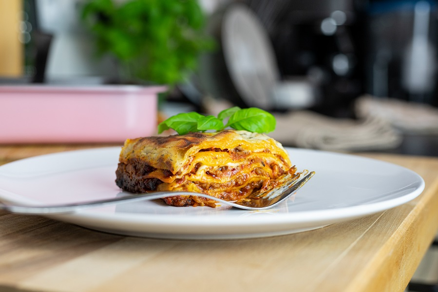

Lasagna

Description:
Lasagna is the name of one of the oldest and best-known pasta shapes.
It is usually rectangular or ribbon shaped, thicker than tagliatelle,
made from a dough based on flour and eggs, with numerous local variants.
After being boiled, the rectangular lasagna noodles are drained and placed
in layers with a filling that varies based on different local traditions.
Ingredients:
- Lasagna Strips
- Chicken
- Cheese
- Tomato sauce
- Salt
- Pepper
- Parmesan
Steps:
- Spread about a cup of meat sauce into a 9×13 pan. Add a layer of strips.
- Top the strips with some of the cheese mixture.
- Repeat the layers, ending with a layer of strips and sauce.
- Cover with foil and bake.
- Remove foil, top with mozzarella and parmesan and bake another 15 minutes.